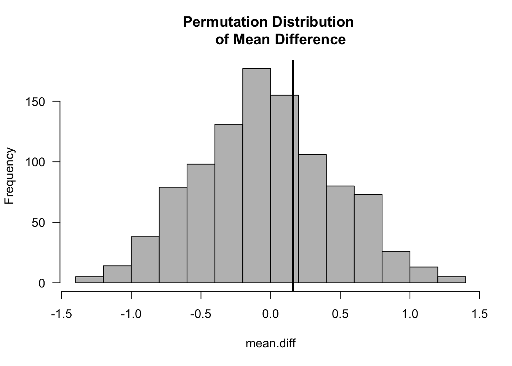

Chapter 5 Permutation Tests
Permutation tests are a useful tool to avoid having to depend on specific parametric assumptions.
Permutation tests are also useful in more complex modern applications where it can be difficult to work out the theoretical null distribution of a certain test statistic.
5.1 Notation
A permutation \(\pi\) of a set \(S\) is a function \(\pi: S \longrightarrow S\) is a function that is both one-to-one and onto.
We will usually think of \(S\) as the set of observation indices in which case \(S = \{1, \ldots, N\}\) for sample size \(N\).
Each permutation \(\pi\) of \(S = \{1, \ldots, N\}\) defines a particular ordering of the elements of \(S\). For this reason, a permutation is often expressed as the following ordered list \[\begin{equation} \pi = \big( \pi(1), \pi(2), \ldots, \pi(N) \big) \end{equation}\]
In other words, we can think of a permutation of \(S\) as a particular ordering of the elements of \(S\).
For example, if \(S = \{1,2,3\}\), and \(\pi_{1}\) is a permutation of \(S\) defined as \(\pi_{1}(1) = 3\), \(\pi_{1}(2) = 1\), \(\pi_{1}(3) = 2\), then this permutation expressed as an ordered list would be \[\begin{equation} \pi_{1} = (3, 1, 2) \end{equation}\]
There are \(5\) other possible permutations of \(S\): \[\begin{eqnarray} \pi_{2} &=& (1,2,3) \nonumber \\ \pi_{3} &=& (2,1,3) \nonumber \\ \pi_{4} &=& (1,3,2) \nonumber \\ \pi_{5} &=& (3,2,1) \nonumber \\ \pi_{6} &=& (2, 3, 1) \nonumber \end{eqnarray}\]
If \(S\) has \(N\) distinct elements, there are \(N!\) possible permutations of \(S\).
We will let \(\mathcal{S}_{N}\) denote the set of all permutations of the set \(\{1, \ldots, N\}\).
5.2 Permutation Tests for the Two-Sample Problem
- A permutation test is motivated by the following reasoning.
- If there is no real difference between the two groups, there is nothing “special” about the difference in means between the two groups.
- The observed difference in the mean between the two groups should not be notably different than mean differences from randomly formed groups.
- Forming “random” groups can be done by using many permutations of the original data.
Suppose we have observations from two groups \(X_{1}, \ldots, X_{n} \sim F_{X}\) and \(Y_{1}, \ldots, Y_{m} \sim F_{Y}\).
Let \(\mathbf{Z} = (Z_{1}, \ldots, Z_{N})\) denote pooled data \[\begin{equation} (Z_{1}, \ldots, Z_{N}) = (X_{1}, \ldots, X_{n}, Y_{1}, \ldots, Y_{m}) \end{equation}\]
For a permutation \(\pi\) of \(\{1, \ldots, N\}\), we will let \(\mathbf{Z}_{\pi}\) denote the corresponding permuted dataset \[\begin{equation} \mathbf{Z}_{\pi} = (Z_{\pi(1)}, Z_{\pi(2)}, \ldots, Z_{\pi(N)}) \end{equation}\]
| OriginalData | Perm1 | Perm2 | Perm3 | Perm4 | Perm5 | |
|---|---|---|---|---|---|---|
| z1 | 0.60 | -0.60 | 0.60 | -0.90 | 0.70 | 0.60 |
| z2 | -0.80 | -1.40 | -0.60 | 0.70 | -0.40 | -0.60 |
| z3 | -0.60 | 0.70 | 0.20 | 0.60 | -1.40 | -0.80 |
| z4 | -0.90 | 0.20 | -0.40 | 0.20 | 0.20 | 0.30 |
| z5 | 0.30 | -0.40 | -1.30 | -0.40 | -0.90 | -0.40 |
| z6 | -1.30 | -1.30 | -1.40 | -0.60 | -0.80 | 0.70 |
| z7 | 0.20 | 0.30 | 0.70 | -1.40 | 0.30 | -0.90 |
| z8 | 0.70 | 0.60 | 0.30 | -1.30 | 0.60 | 0.20 |
| z9 | -1.40 | -0.90 | -0.80 | 0.30 | -0.60 | -1.40 |
| z10 | -0.40 | -0.80 | -0.90 | -0.80 | -1.30 | -1.30 |
| mean difference | 0.16 | 0.12 | 0.12 | 0.80 | 0.00 | 0.36 |
The columns in the above table are just permutations of the original data \(\mathbf{Z}\).
Suppose we want to base a test on the difference in the means between the two groups \[\begin{equation} T_{N}(\mathbf{Z}) = \bar{X} - \bar{Y} = \frac{1}{n}\sum_{i=1}^{n} Z_{i} - \frac{1}{m}\sum_{i=n+1}^{N} Z_{i} \end{equation}\]
We will let \(t_{obs}\) denote the observed value of the mean difference. That is, \(t_{obs} = T_{N}(\mathbf{Z}_{obs})\), where \(\mathbf{Z}_{obs}\) is the vector of the observed data.
Under the null hypothesis that \(F_{X} = F_{Y}\), the observed mean difference should not be “abnormal” when compared with the mean differences from many other permutations of the data.
z <- c(0.6, -0.8, -0.6, -0.9, 0.3, -1.3, 0.2, 0.7, -1.4, -0.4) ## data
observed.diff <- mean(z[1:5]) - mean(z[6:10]) ## observed mean difference
nreps <- 1000
mean.diff <- rep(NA, nreps)
for(k in 1:nreps) {
ss <- sample(1:10, size=10) ## draw a random permutation
z.perm <- z[ss] ## form the permuted dataset
mean.diff[k] <- mean(z.perm[1:5]) - mean(z.perm[6:10]) ## compute mean difference
## for permuted dataset
}
hist(mean.diff, las=1, col="grey", main="Permutation Distribution of Mean Difference")
abline(v=observed.diff, lwd=3)
The one-sided p-value for the permutation test is \[\begin{eqnarray} \textrm{p-value} &=& \frac{\textrm{number of permutations such that } T_{N} \geq t_{obs}}{ N! } \nonumber \\ &=& \frac{1}{N!} \sum_{\pi \in \mathcal{S}_{N}} I\Big( T_{N}(\mathbf{Z}_{\pi}) \geq t_{obs} \Big) \nonumber \end{eqnarray}\]
The two-sided p-value for the two-sample problem would be \[\begin{equation} \textrm{p-value} = \frac{1}{N!} \sum_{\pi \in \mathcal{S}_{N}} I\Big( \Big| T_{N}(\mathbf{Z}_{\pi}) \Big| \geq |t_{obs}| \Big) \nonumber \end{equation}\]
As we did when producing the above histogram, the permutation-test p-value is often computed by using a large number of random permutations rather than computing the test statistic for every possible permutation.
The Monte Carlo permutation p-value is defined as \[\begin{equation} \textrm{p-value}_{mc} = \frac{1}{S+1}\Bigg[ 1 + \sum_{s = 1}^{S} I\Big( T_{N}(\mathbf{Z}_{\pi_{k}}) \geq t_{obs} \Big) \Bigg] \end{equation}\] where \(\pi_{1}, \ldots, \pi_{S}\) are randomly drawn permutations
The two-sided (Monte Carlo) p-value for the example shown in the above Table is
## [1] 0.765.3 The Permutation Test as a Conditional Test
- A permutation test is an example of a conditional test.